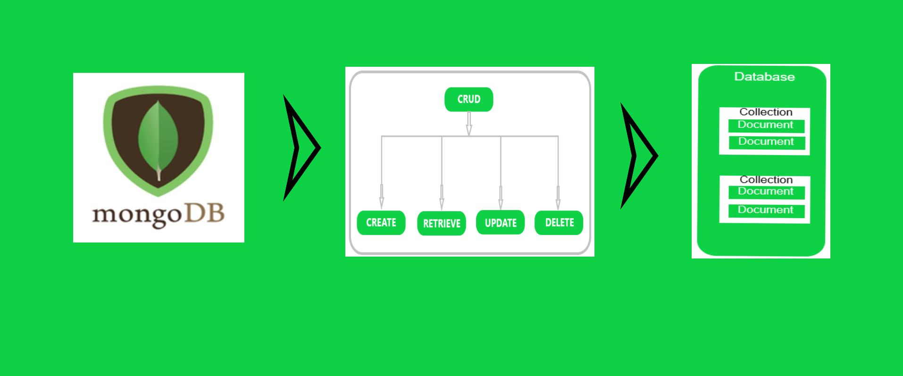

Що таке MongoDB?
MongoDB — одна з найпопулярніших документно-орієнтованих NoSQL баз даних.
Замість таблиць і рядків MongoDB використовує колекції (Collections) та документи (Documents).
У MongoDB один документ приблизно відповідає одному запису в таблиці
SQL.
Структура MongoDB
| SQL | MongoDB |
|---|---|
| Database | Database |
| Table | Collection |
| Row | Document |
| Column | Field |
Що таке JSON?
JSON (JavaScript Object Notation) — текстовий формат представлення даних.
Саме у такому вигляді найчастіше зберігаються документи MongoDB.
{
"name": "Марія",
"age": 16,
"class": "10-А",
"city": "Київ"
}
Основні правила JSON
- Дані записуються у фігурних дужках { }
- Ключі беруться в лапки
- Кожне поле має значення
- Пари ключ-значення розділяються комами
Складніші документи
{
"name": "Марія",
"age": 16,
"class": "10-А",
"subjects": [
"Інформатика",
"Математика",
"Фізика"
],
"address": {
"city": "Київ",
"street": "Шевченка"
}
}
Документи можуть містити вкладені об'єкти та масиви.
CRUD-операції
CRUD — це чотири основні операції роботи з даними:
| Операція | Значення |
|---|---|
| Create | Створення даних |
| Read | Читання даних |
| Update | Оновлення даних |
| Delete | Видалення даних |

Create — додавання документа
db.students.insertOne({
name: "Марія",
age: 16,
class: "10-А"
});
Команда додає новий документ до колекції students.
Read — пошук документів
Вивести всі документи
db.students.find();
Знайти конкретного учня
db.students.find({
name: "Марія"
});
Знайти учнів старше 15 років
db.students.find({
age: { $gt: 15 }
});
Update — оновлення документа
db.students.updateOne(
{ name: "Марія" },
{
$set: {
city: "Львів"
}
}
);
Команда додає або змінює поле city.
Delete — видалення документа
db.students.deleteOne({
name: "Марія"
});
Документ буде видалено з колекції.
Приклад повного життєвого циклу документа
- Створення документа про учня.
- Пошук документа у базі.
- Оновлення інформації.
- Видалення документа після завершення навчання.
Практичне завдання
Колекція "Учні"
Створіть 5 документів із такими полями:
{
"name": "",
"class": "",
"age": 0,
"email": ""
}
Виконайте:
- Додавання записів.
- Пошук учнів певного класу.
- Пошук учнів старших за 15 років.
- Оновлення електронної адреси.
- Видалення одного документа.
Підсумок
- MongoDB є документною NoSQL базою даних.
- Дані зберігаються у форматі JSON-подібних документів.
- Колекції містять документи.
- CRUD-операції дозволяють створювати, читати, оновлювати та видаляти дані.
- MongoDB широко використовується у вебдодатках та хмарних сервісах.
Запитання для самоперевірки
- Що таке MongoDB?
- Що таке документ?
- Для чого використовується JSON?
- Що означає CRUD?
- Яка команда використовується для додавання документа?
- Як знайти всі документи колекції?
- Як оновити поле документа?
- Як видалити документ?